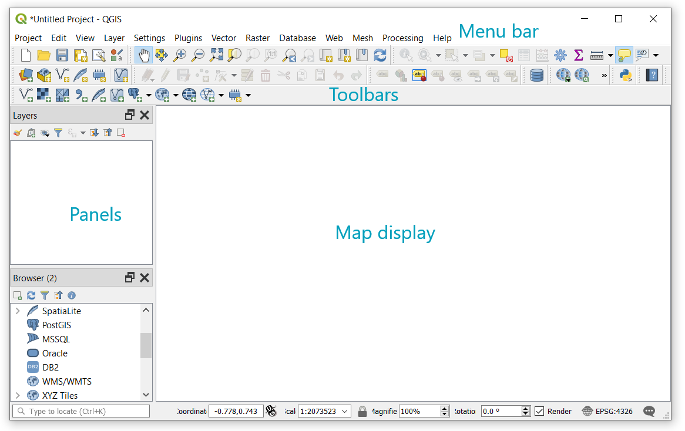

Section 2 QGIS installation and Graphical User Interface
2.1 QGIS installation
It is possible to install QGIS on Windows, Mac OS X, Linux, BSD, and Android operating systems. The installers can be downloaded from this website, and this link provides detailed installation instructions.
By the time of writing this document, the last version of QGIS is 3.8.2 Zanzibar, which was released on October 16, 2019.
2.2 QGIS Graphical User Interface
The QGIS graphical user interface (GUI) is composed of:
- Menu bar: gives access to the main functionalities of QGIS.
- Toolbars: give a quick access to QGIS functionalities.
- Panels: they provide several functionalities, for instance managing layers, and browsing spatial data.
- Map display: shows the spatial data of the current project.

Figure 2.1: QGIS GUI
It is possible to customize the appearance of QGIS by navigating to View from the Menu bar. From here, you can select the panels and toolbars you want to display. I would recommend toggling the Processing Toolbox from the panel because it allows to quickly access to the main operations available in QGIS.